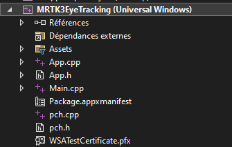

Nous arrivons maintenant à la dernière partie de ce tutoriel. En effet, le déployement est extrêmement important car c'est cette étape qui va donner vie à votre application.
La partie finale de ce tutoriel va se dérouler en 2 chapitres :
Le build sur Unity
Le déployement sur Visual Studio
Build le projet sur Unity
Enregistrer la dernière version voulue de votre scène
Cliquer sur "File" puis "Build Settings"
Si vous ne voyez pas votre scene dans l'espace "Scenes in build", cliquez sur "Add Open Scenes", ce qui va ajouter l'ensemble des scenes ouvertes dans l'éditeur Unity au build
Si cela n'est pas le cas : compléter l'adresse IP, le username et le mot de passe de votre hololens 2
Vous pouvez maintenant cliquer sur le bouton "Build"
Une fenêtre de l'explorateur de fichier va s'ouvrir. Créer le dossier "build" et le choisir et tant qu'emplacement
Le build peut prendre un certain temps. Quand celui-ci sera fini, il ouvrira dans l'explorateur de fichier votre projet.
Déployement sur le Hololens 2
En étant dans le dossier du projet, ouvrir sur le dossier "build"
Le logo de Visual Studio doit s'afficher à coté du ficher au format *.sln
Double-cliquer sur le fichier *.sln en question. La solution va s'ouvrir dans Visual Studio
Développer le menu de votre projet dans l'explorateur de solution et ouvrir le fichier le fichier Package.appxmanifest

Lorsque le fichier est ouvert, aller dans l'onglet "Capacité", trouver Internet (client et serveur) et Internet (client). Cocher ces 2 paramètres si ce n'est pas le cas puis sauvegarder
Selectionner le dossier parent du projet dans l'explorateur de solution. Dans la barre d'option en haut de l'IDE, sélectionner "Release" et "ARM64"
Aller dans "Projet" puis "Propriétés"
Vérifier que la configuration et la plateforme correspondent bien avec l'étape précédente. Cliquer sur "Débogage" et modifier les paramètres comme sur la photo
Appliquer ces paramètres
Développer le menu "Générer" puis sélectionner sur "Déployer la solution"
Le déployement peut durer plusisieurs minutes. Quand Visual Studio affiche Deploy Done ou Deploy : 1 succeded, c'est que cela a bien fonctionné.
Vous pouvez maintenant prendre le Hololens et vous retrouverez votre application Unity dans la liste des applications du casque.
Ce tutoriel, de l'installation de Unity au déployement d'une application sur le Hololens 2, est enfin fini.